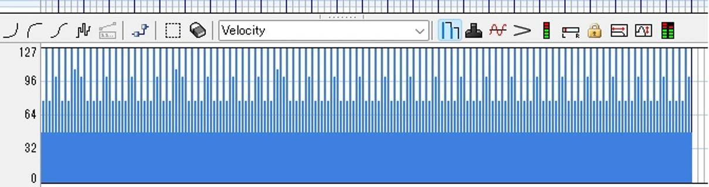
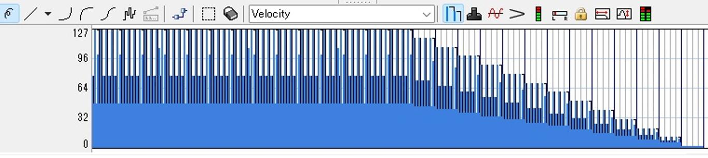

うるがいの話 ある日
最新: XMLツールを作成【うるがいの話 ある日】とは 一日だけのプログです
『うるがいの話』の最新一日だけのプログで、通信料が少なく経済的だ。カニの画像をクリックすると全ての日付が載る『うるがいの話』サイトを表示します
|
|
【うるがいの話】 うるがい(ｳﾙｶﾞｲ urugai)とは、『もずくがに』の名前でとても大きくなります。 |
|---|---|
|
|
【カミマヤーの話】 猫のことを方言でマヤーといいます。カミマヤー（kamimayaa）とは、神の猫のことです。 |
|
【たながぁの音楽】 たながぁ（ﾀﾅｶﾞｰ tanagaa）とは手長えびのことで、何種類かあり大きいのは車 エビぐらいになります。 |

|
【ぶながぁの話】 ぶながぁ(ﾌﾞﾅｶﾞｰ bunagaa)とは、赤い髪の毛、赤い身体、そして身長は１ｍ２０ｃｍ ぐらい、川の蟹を食べているの目撃された。場所は沖縄県国頭郡大宜味村のと ある村僕の隣近所に住んでいる爺さんから、聞いた話です。 |
|
|
【ギーマの話】 ギーマ(giima)とは、山原の里山に咲くスズランに似た、 花を付けます。実は食べられます、 気が付くと口の周りが紫になっています。 |
2026年07月18日 (土）XMLツールを作成
15:56
ネットでみつけた楽譜データのエンディングが、突如と終わって
しまう。毎度のことだがその楽譜データは、本来は徐々に音量が
小さくなるフェードアウトになっている筈だが、私が利用してい
る無料の楽譜ソフトでは、その楽譜データを忠実に反映されない

難儀な手作業で、やればある程度対応できるのだが・・。その筋
なので、プログラムで対応した。下がそのツールでフェードアウ
トを実現できた画像である。

ＤＴＭ歴５年、いろいろなツールを利用している。上の画像は無
料のＤｏｍｉｎｏ（ピアノロールをメインとしたＭＩＤＩ専用の
音楽編集ソフト）の画像の一部である。難儀したので、詳細は明
日以降に書くことに。
私が、５月に購入したスマホの値段が、今日付けで高くなってい
る。良かったぜ。
iPhone 17で12万9800円から14万2800円へと引き上げられた。